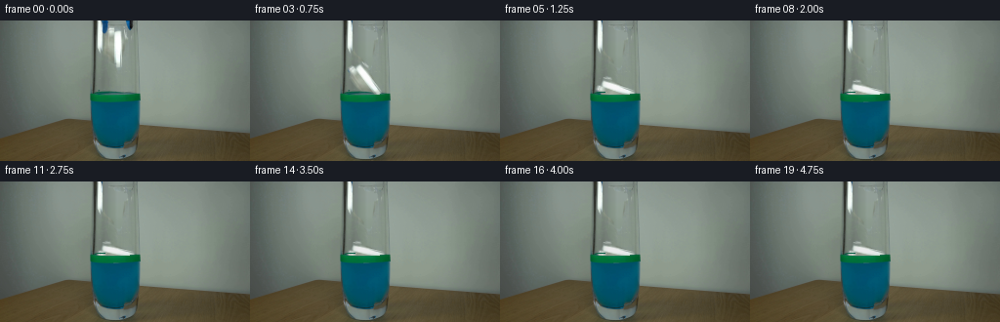
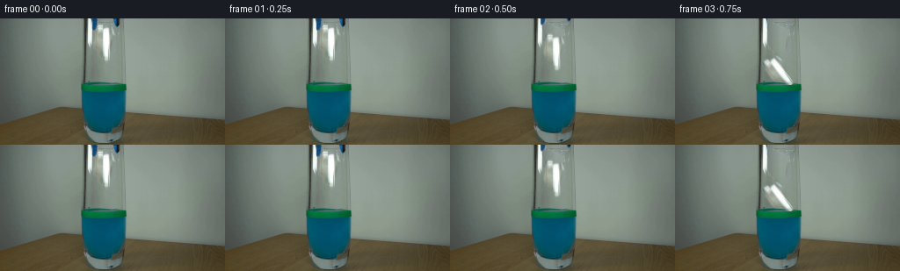
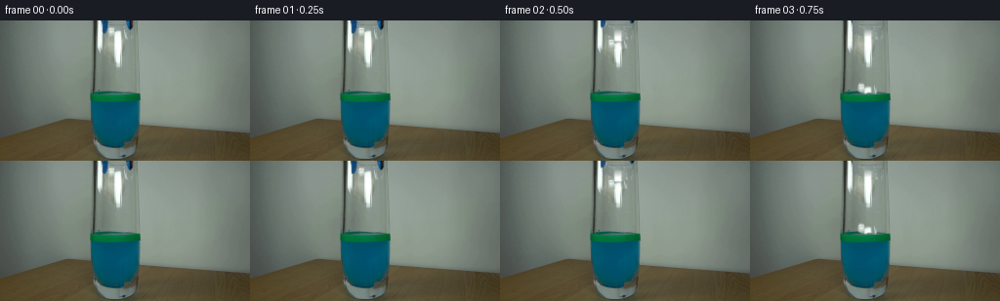

CODING AGENTS AS PIXEL WORLD MODELS
traex/GPT-6.1-Sol · 0138
点击播放 · 原生 RGB 像素
逐轮保存的候选
回放视频、检查图与代码变化。
每份候选均可单独播放。实际图片检查记录在下方工具轨迹中。
候选 01播放与检查图
点击播放 · 原生 RGB 像素

展开代码变化
--- 上一保存版本
+++ 本次保存版本
@@ -0,0 +1,167 @@
+"""A locked-camera, image-based reconstruction of the paper release.
+
+All textures and the fixed laboratory background come from first_frame.png.
+The short drop, the withdrawal of the two grabber jaws, and buoyant settling
+are computed in image coordinates and composited with the glass in front.
+"""
+from pathlib import Path
+import math
+import numpy as np
+from PIL import Image, ImageDraw, ImageFilter
+import cv2
+from scipy.ndimage import gaussian_filter, map_coordinates
+from artifact_io import save
+
+ROOT = Path(__file__).resolve().parent
+H, W = 144, 256
+
+def polygon(points, feather=.32):
+ s=6
+ m=Image.new('L',(W*s,H*s),0)
+ ImageDraw.Draw(m).polygon([(int(x*s),int(y*s)) for x,y in points],fill=255)
+ if feather:
+ m=m.filter(ImageFilter.GaussianBlur(feather*s))
+ return np.asarray(m.resize((W,H),Image.Resampling.LANCZOS),dtype=np.float32)/255.
+
+
+def make_scene(src):
+ # The glass has a stationary, strong reflection on its left wall. Keep
+ # that reflection separate from the pale, folded paper held between jaws.
+ paper_mask=polygon([(111,6),(116,6),(118,9.8),(124,10),(127.5,9.5),
+ (128.8,11.5),(130.6,13),(130.6,17.4),(128.8,20),(126.6,20),
+ (126.7,27),(125.8,33),(125.7,38),(125.8,42),(125,46.4),
+ (122.8,49),(119.1,48.8),(117.2,45.5),(116.7,41.7),
+ (113.6,38),(110.3,35.7),(107.6,32.8),(106.3,28.5),
+ (105.7,24),(106,18.5),(106.5,14),(109.6,12.3),(109.4,8.8)],.42)
+ left_mask=polygon([(103.4,-3),(111,-3),(111.2,10.3),
+ (110.1,12.6),(108.2,14.2),(105.2,13.8),(104.5,11),
+ (104.4,5.1)],.26)
+ right_mask=polygon([(128.3,-3),(136.2,-3),(136,6.2),
+ (134.5,9.1),(133.4,10.1),(131.5,9.6),(130.4,7.7),
+ (129.2,4.7)],.26)
+ # Rebuild the hidden glass/background from the immediately adjacent
+ # unobstructed columns and the same columns lower down in the air space.
+ clean=src.copy().astype(np.float32)
+ profile=np.median(src[51:61].astype(float),axis=0)
+ profile=gaussian_filter(profile,(.60,0))
+ for y in range(0,52):
+ # Illumination of the wall in this image has a smooth vertical falloff.
+ offset=src[max(0,y-2):min(H,y+3),82:90].mean((0,1))-src[51:61,82:90].mean((0,1))
+ for x in range(105,133):
+ clean[y,x]=profile[x]+offset
+ # Right jaw stands in front of a nearly featureless section of glass.
+ for y in range(0,12):
+ a=src[y,126].astype(float); b=src[y,139].astype(float)
+ for x in range(127,137):
+ u=(x-126)/13
+ clean[y,x]=(1-u)*a+u*b
+ # Keep the original frame everywhere except under the moving objects.
+ all_mask=np.maximum(paper_mask,np.maximum(left_mask,right_mask))
+ bg=src*(1-all_mask[...,None])+clean*all_mask[...,None]
+ # Alpha layers retain the original fine illumination and fold texture.
+ return bg, [(src.copy().astype(float),left_mask),
+ (src.copy().astype(float),right_mask)], (src.copy().astype(float),paper_mask)
+
+
+def transform_layer(rgb,alpha,M,shape=(H,W)):
+ # Premultiplied resampling prevents dark/background rims on the paper.
+ h,w=shape
+ a=cv2.warpAffine(alpha.astype(np.float32),M,(w,h),flags=cv2.INTER_LINEAR,
+ borderMode=cv2.BORDER_CONSTANT,borderValue=0)
+ c=cv2.warpAffine((rgb*alpha[...,None]).astype(np.float32),M,(w,h),
+ flags=cv2.INTER_LINEAR,borderMode=cv2.BORDER_CONSTANT,borderValue=0)
+ return c,a
+
+
+def affine(cx,cy,theta,sx,sy,pivot=(117.7,27.5)):
+ a=math.radians(theta);co=math.cos(a);si=math.sin(a)
+ A=np.array([[co*sx,-si*sy],[si*sx,co*sy]],dtype=np.float32)
+ v=np.array([cx,cy])-A@np.array(pivot)
+ return np.column_stack((A,v)).astype(np.float32)
+
+
+def render_frame(src,bg,jaws,paper,t):
+ out=bg.copy()
+ yy,xx=np.mgrid[:H,:W].astype(np.float32)
+ release=.36
+ gravity=1100.
+ drop=25.5
+ impact=release+math.sqrt(2*drop/gravity)
+ s=max(0.,t-impact)
+ # Small, rapidly decaying capillary waves; the opaque green level tape
+ # itself never moves. Most of the disturbance is masked by that tape.
+ if s>0:
+ wave=math.exp(-s*2.0)
+ rad=np.sqrt(((xx-118)/1.0)**2+((yy-76)*6.8)**2)
+ d=.42*wave*np.sin(rad*1.2-s*13)*np.exp(-((yy-84)/5)**2)
+ wet=(yy>=83)&(yy<94)&(xx>=95)&(xx<141)
+ for k in range(3):
+ r=map_coordinates(bg[:,:,k],[yy+d,xx+.20*d],order=1,mode='nearest')
+ out[:,:,k]=np.where(wet,r,out[:,:,k])
+ # The grabber first opens a little, then is withdrawn through the top of
+ # the fixed camera frame. Its original shafts continue beyond the frame.
+ open_amt=1.9*min(1,t/.45)
+ pull=0 if t<.35 else 40*(t-.35)+16*(t-.35)**2
+ for side,(tex,mask) in zip((-1,1),jaws):
+ M=np.array([[1,0,side*open_amt],[0,1,-pull]],np.float32)
+ rgb,a=transform_layer(tex,mask,M)
+ out=out*(1-a[...,None])+rgb
+ if t<=release:
+ cx,cy=117.7,27.5
+ theta=0.
+ sx=sy=1.
+ elif t<impact:
+ u=t-release
+ cx=117.7+.6*u
+ cy=27.5+.5*gravity*u*u
+ theta=-8*u
+ sx=sy=1.
+ else:
+ # The lower fold touches first. The light paper turns gently onto
+ # its side rather than continuing through the water ballistically.
+ q=1-math.exp(-s*3.6)
+ theta=-77*q - 2.2*math.sin(s*3.5)*math.exp(-s*.8)
+ sx=1-.16*(1-math.exp(-s*2.2))
+ sy=1-.12*(1-math.exp(-s*1.7))
+ a=math.radians(theta)
+ halfheight=21.5*abs(math.cos(a))*sy+12.0*abs(math.sin(a))*sx
+ lift=.20+.80*math.exp(-s*3.3)
+ cy=76.2-halfheight*lift-.2
+ cy+=.65*math.sin(s*6.0)*math.exp(-s*1.25)
+ cx=117.7+1.55*(1-math.exp(-s*.65))+.45*math.sin(s*2.0)*math.exp(-s*.5)
+ M=affine(cx,cy,theta,sx,sy)
+ rgb,a=transform_layer(paper[0],paper[1],M)
+ if s>0:
+ # Wet paper is mildly less brilliant. The part below the surface
+ # is seen through the same blue liquid as the original frame.
+ wetting=.085*(1-math.exp(-s*.70))
+ rgb*=1-wetting
+ under=np.clip((yy-77.0)/7.,0,1)
+ trans=np.array([.33,.67,.77],np.float32)
+ rgb=rgb*(1-under[...,None]+under[...,None]*trans)
+ rgb+=out*a[...,None]*under[...,None]*.13
+ out=out*(1-a[...,None])+rgb
+ # The band is affixed to the outside of the glass, in front of paper.
+ r,g,b=src[:,:,0],src[:,:,1],src[:,:,2]
+ tape=((g.astype(float)>r.astype(float)+38)&
+ (g.astype(float)>b.astype(float)+19)&(yy>=73)&(yy<=83))
+ tm=gaussian_filter(tape.astype(float),.26)
+ out=out*(1-tm[...,None])+src*tm[...,None]
+ return np.clip(out+0.5,0,255).astype(np.uint8)
+
+
+def main():
+ src=np.asarray(Image.open(ROOT/'first_frame.png').convert('RGB'))
+ assert src.shape==(H,W,3)
+ bg,jaws,paper=make_scene(src)
+ frames=[src.copy()]
+ for n in range(1,20):
+ frames.append(render_frame(src,bg,jaws,paper,n/4.))
+ frames=np.stack(frames).astype(np.uint8)
+ save(frames,ROOT)
+ # Save local numerical-debug intermediates without relying on a viewer.
+ Image.fromarray(np.clip(bg,0,255).astype(np.uint8)).save(ROOT/'.tmp/clean_plate.png')
+ Image.fromarray((paper[1]*255).astype(np.uint8)).save(ROOT/'.tmp/paper_alpha.png')
+
+if __name__=='__main__':
+ main()
候选 02播放与检查图
点击播放 · 原生 RGB 像素


展开代码变化
--- 上一保存版本
+++ 本次保存版本
@@ -27,12 +27,11 @@
def make_scene(src):
# The glass has a stationary, strong reflection on its left wall. Keep
# that reflection separate from the pale, folded paper held between jaws.
- paper_mask=polygon([(111,6),(116,6),(118,9.8),(124,10),(127.5,9.5),
- (128.8,11.5),(130.6,13),(130.6,17.4),(128.8,20),(126.6,20),
- (126.7,27),(125.8,33),(125.7,38),(125.8,42),(125,46.4),
- (122.8,49),(119.1,48.8),(117.2,45.5),(116.7,41.7),
- (113.6,38),(110.3,35.7),(107.6,32.8),(106.3,28.5),
- (105.7,24),(106,18.5),(106.5,14),(109.6,12.3),(109.4,8.8)],.42)
+ paper_mask=polygon([(110.9,6.5),(115.8,6.6),(117.7,9.6),
+ (120.8,9.8),(124.5,10.2),(126.9,9.3),(128.4,10.7),
+ (130.1,12.9),(130.1,15.7),(128.7,18.2),(125.7,17.4),
+ (123.6,16.8),(120.7,16.5),(118.2,17.6),(115.3,16.9),
+ (111.6,15.5),(109.7,13.4),(109.9,10.5)],.37)
left_mask=polygon([(103.4,-3),(111,-3),(111.2,10.3),
(110.1,12.6),(108.2,14.2),(105.2,13.8),(104.5,11),
(104.4,5.1)],.26)
@@ -42,13 +41,20 @@
# Rebuild the hidden glass/background from the immediately adjacent
# unobstructed columns and the same columns lower down in the air space.
clean=src.copy().astype(np.float32)
+ # The long white vertical streaks below the rim are optical glass
+ # reflections, not part of the little crumpled piece. They remain fixed.
profile=np.median(src[51:61].astype(float),axis=0)
profile=gaussian_filter(profile,(.60,0))
- for y in range(0,52):
- # Illumination of the wall in this image has a smooth vertical falloff.
+ for y in range(0,20):
offset=src[max(0,y-2):min(H,y+3),82:90].mean((0,1))-src[51:61,82:90].mean((0,1))
for x in range(105,133):
clean[y,x]=profile[x]+offset
+ # Extrapolate the specular strip smoothly upward where occluded by
+ # the paper at the inside of the glass rim.
+ fade=np.clip((y-8)/9.,0.,1.)
+ for x in range(116,127):
+ target=src[19:22,x].mean(0)
+ clean[y,x]=clean[y,x]*(1-fade)+target*fade
# Right jaw stands in front of a nearly featureless section of glass.
for y in range(0,12):
a=src[y,126].astype(float); b=src[y,139].astype(float)
@@ -73,7 +79,7 @@
return c,a
-def affine(cx,cy,theta,sx,sy,pivot=(117.7,27.5)):
+def affine(cx,cy,theta,sx,sy,pivot=(119.8,12.5)):
a=math.radians(theta);co=math.cos(a);si=math.sin(a)
A=np.array([[co*sx,-si*sy],[si*sx,co*sy]],dtype=np.float32)
v=np.array([cx,cy])-A@np.array(pivot)
@@ -83,9 +89,9 @@
def render_frame(src,bg,jaws,paper,t):
out=bg.copy()
yy,xx=np.mgrid[:H,:W].astype(np.float32)
- release=.36
- gravity=1100.
- drop=25.5
+ release=.31
+ gravity=640.
+ drop=56.2
impact=release+math.sqrt(2*drop/gravity)
s=max(0.,t-impact)
# Small, rapidly decaying capillary waves; the opaque green level tape
@@ -107,28 +113,28 @@
rgb,a=transform_layer(tex,mask,M)
out=out*(1-a[...,None])+rgb
if t<=release:
- cx,cy=117.7,27.5
+ cx,cy=119.8,12.5
theta=0.
sx=sy=1.
elif t<impact:
u=t-release
- cx=117.7+.6*u
- cy=27.5+.5*gravity*u*u
- theta=-8*u
+ cx=119.8+.6*u
+ cy=12.5+.5*gravity*u*u
+ theta=-23*u
sx=sy=1.
else:
# The lower fold touches first. The light paper turns gently onto
# its side rather than continuing through the water ballistically.
q=1-math.exp(-s*3.6)
- theta=-77*q - 2.2*math.sin(s*3.5)*math.exp(-s*.8)
- sx=1-.16*(1-math.exp(-s*2.2))
- sy=1-.12*(1-math.exp(-s*1.7))
+ theta=-13*q - 3.2*math.sin(s*3.5)*math.exp(-s*.8)
+ sx=1-.08*(1-math.exp(-s*2.2))
+ sy=1-.07*(1-math.exp(-s*1.7))
a=math.radians(theta)
- halfheight=21.5*abs(math.cos(a))*sy+12.0*abs(math.sin(a))*sx
- lift=.20+.80*math.exp(-s*3.3)
+ halfheight=6.*abs(math.cos(a))*sy+9.3*abs(math.sin(a))*sx
+ lift=.61+.39*math.exp(-s*3.3)
cy=76.2-halfheight*lift-.2
cy+=.65*math.sin(s*6.0)*math.exp(-s*1.25)
- cx=117.7+1.55*(1-math.exp(-s*.65))+.45*math.sin(s*2.0)*math.exp(-s*.5)
+ cx=119.8+1.55*(1-math.exp(-s*.65))+.45*math.sin(s*2.0)*math.exp(-s*.5)
M=affine(cx,cy,theta,sx,sy)
rgb,a=transform_layer(paper[0],paper[1],M)
if s>0:
候选 03播放与检查图
候选 04播放与检查图
点击播放 · 原生 RGB 像素

展开代码变化
--- 上一保存版本
+++ 本次保存版本
@@ -99,8 +99,9 @@
if s>0:
wave=math.exp(-s*2.0)
rad=np.sqrt(((xx-118)/1.0)**2+((yy-76)*6.8)**2)
- d=.42*wave*np.sin(rad*1.2-s*13)*np.exp(-((yy-84)/5)**2)
- wet=(yy>=83)&(yy<94)&(xx>=95)&(xx<141)
+ envelope=np.exp(-((yy-84)/5)**2)+.5*np.exp(-((yy-73)/2.3)**2)
+ d=.42*wave*np.sin(rad*1.2-s*13)*envelope
+ wet=(((yy>=83)&(yy<94))|((yy>=71)&(yy<76)))&(xx>=98)&(xx<140)
for k in range(3):
r=map_coordinates(bg[:,:,k],[yy+d,xx+.20*d],order=1,mode='nearest')
out[:,:,k]=np.where(wet,r,out[:,:,k])
@@ -123,8 +124,8 @@
theta=-23*u
sx=sy=1.
else:
- # The lower fold touches first. The light paper turns gently onto
- # its side rather than continuing through the water ballistically.
+ # The lower fold touches first. The light paper tilts and settles
+ # buoyantly rather than continuing through the water ballistically.
q=1-math.exp(-s*3.6)
theta=-13*q - 3.2*math.sin(s*3.5)*math.exp(-s*.8)
sx=1-.08*(1-math.exp(-s*2.2))
可观测工具轨迹
实际执行的命令与返回图片。
命令 1exit 0
/bin/bash -lc 'ls -la && cat prompt.txt && cat GENERATION_RULES.md'
命令 2exit 0
/bin/bash -lc "cat artifact_io.py && python - <<'PY'
from PIL import Image
import numpy as np
im=np.array(Image.open('first_frame.png'))
print(im.shape)
print('corners',im[0,0], im[0,-1],im[-1,0],im[-1,-1])
Image.fromarray(im).resize((128,72))
pal=' .:-=+*#%@'
g=np.array(Image.fromarray(im).convert('L').resize((128,72)))
for r in g: print(''.join(pal[min(9,int(v)//26)] for v in r))
PY"命令 3exit 0
/bin/bash -lc "python - <<'PY'
import numpy as np
from PIL import Image
from collections import Counter
im=np.array(Image.open('first_frame.png'))
# coarse sampled RGB grid
for y in range(0,144,4):
print('y',y, ' '.join(f'{x}:{\"/\".join(map(str, im[y,x]))}' for x in range(88,157,4)))
# colors by category, 128x72 grid
im=np.array(Image.fromarray(im).resize((128,72)))
for y,row in enumerate(im):
s=''
for r,g,b in row.astype(int):
if max(r,g,b)<45:c='K'
elif b>r*1.35 and b>g*1.07:c='B'
elif g>r*1.3 and g>b*1.05:c='G'
elif r>g*1.3 and r>b*1.25:c='O'
elif min(r,g,b)>200:c='W'
elif min(r,g,b)>165:c='w'
elif r+b<g*1.8:c='g'
elif b>r+12:c='b'
elif max(r,g,b)<75:c='k'
elif r>b+30:c='t'
else: c='.'
s+=c
print(f'{y*2:3} {s}')
PY"命令 4exit 0
/bin/bash -lc "python - <<'PY'
import numpy as np
from PIL import Image
im=np.array(Image.open('first_frame.png')).astype(int)
chars=' .,:;ox%#@'
print(' '+' '.join(str(i) for i in range(90,151,10)))
for y in range(0,83):
s=''
for x in range(88,154):
r,g,b=im[y,x];L=(r+g+b)//3
if b>r+30 and b>g+12:c='B' if L>55 else 'b'
elif g>r+35 and g>b+20:c='G'
else:c=chars[min(9,L//26)]
s+=c
print(f'{y:02d} {s}')
PY"命令 5exit 0
/bin/bash -lc "python - <<'PY'
from PIL import Image
import numpy as np
im=np.array(Image.open('first_frame.png')).astype(int)
# subpixel transitions along rows, edges of glass and bright white
for y in [0,4,8,10,12,16,20,24,28,32,36,40,44,48,56,64,72]:
print('\\ny=',y)
print(' '.join(f'{x}:{im[y,x,0]:3d},{im[y,x,1]:3d},{im[y,x,2]:3d}' for x in range(90,147)))
PY"命令 6exit 0
/bin/bash -lc "python - <<'PY'
import numpy as np
from PIL import Image
im=np.array(Image.open('first_frame.png')).astype(float)
# identify vertical structures and edges
g=im.mean(2)
for y in [0,10,20,30,40,50,60,70,80,100,120,140]:
row=g[y];ed=np.abs(np.diff(row)); print(y,sorted([(round(ed[x],1), x) for x in range(70,160)],reverse=True)[:12])
# full coordinates bright
for y in range(0,50,2):
print(y,'bright:', np.where(im[y].min(1)>185)[0].tolist())
PY"命令 7exit 0
/bin/bash -lc "python - <<'PY'
import importlib.util
for s in ['cv2','scipy','PIL']:print(s,bool(importlib.util.find_spec(s)))
from PIL import Image
import numpy as np
im=np.array(Image.open('first_frame.png'))
# RGB descriptive grid for paper region
for y in range(5,20):
print(y, ' '.join(f'{x}: {tuple(im[y,x])}' for x in [106,108,110,112,114,116,118,120,122,124,126,128,130,132,134]))
PY"命令 8exit 0
/bin/bash -lc "cat > generate.py <<'PY'
\"\"\"A locked-camera, image-based reconstruction of the paper release.
All textures and the fixed laboratory background come from first_frame.png.
The short drop, the withdrawal of the two grabber jaws, and buoyant settling
are computed in image coordinates and composited with the glass in front.
\"\"\"
from pathlib import Path
import math
import numpy as np
from PIL import Image, ImageDraw, ImageFilter
import cv2
from scipy.ndimage import gaussian_filter, map_coordinates
from artifact_io import save
ROOT = Path(__file__).resolve().parent
H, W = 144, 256
def polygon(points, feather=.32):
s=6
m=Image.new('L',(W*s,H*s),0)
ImageDraw.Draw(m).polygon([(int(x*s),int(y*s)) for x,y in points],fill=255)
if feather:
m=m.filter(ImageFilter.GaussianBlur(feather*s))
return np.asarray(m.resize((W,H),Image.Resampling.LANCZOS),dtype=np.float32)/255.
def make_scene(src):
# The glass has a stationary, strong reflection on its left wall. Keep
# that reflection separate from the pale, folded paper held between jaws.
paper_mask=polygon([(111,6),(116,6),(118,9.8),(124,10),(127.5,9.5),
(128.8,11.5),(130.6,13),(130.6,17.4),(128.8,20),(126.6,20),
(126.7,27),(125.8,33),(125.7,38),(125.8,42),(125,46.4),
(122.8,49),(119.1,48.8),(117.2,45.5),(116.7,41.7),
(113.6,38),(110.3,35.7),(107.6,32.8),(106.3,28.5),
(105.7,24),(106,18.5),(106.5,14),(109.6,12.3),(109.4,8.8)],.42)
left_mask=polygon([(103.4,-3),(111,-3),(111.2,10.3),
(110.1,12.6),(108.2,14.2),(105.2,13.8),(104.5,11),
(104.4,5.1)],.26)
right_mask=polygon([(128.3,-3),(136.2,-3),(136,6.2),
(134.5,9.1),(133.4,10.1),(131.5,9.6),(130.4,7.7),
(129.2,4.7)],.26)
# Rebuild the hidden glass/background from the immediately adjacent
# unobstructed columns and the same columns lower down in the air space.
clean=src.copy().astype(np.float32)
profile=np.median(src[51:61].astype(float),axis=0)
profile=gaussian_filter(profile,(.60,0))
for y in range(0,52):
# Illumination of the wall in this image has a smooth vertical falloff.
offset=src[max(0,y-2):min(H,y+3),82:90].mean((0,1))-src[51:61,82:90].mean((0,1))
for x in range(105,133):
clean[y,x]=profile[x]+offset
# Right jaw stands in front of a nearly featureless section of glass.
for y in range(0,12):
a=src[y,126].astype(float); b=src[y,139].astype(float)
for x in range(127,137):
u=(x-126)/13
clean[y,x]=(1-u)*a+u*b
# Keep the original frame everywhere except under the moving objects.
all_mask=np.maximum(paper_mask,np.maximum(left_mask,right_mask))
bg=src*(1-all_mask[...,None])+clean*all_mask[...,None]
# Alpha layers retain the original fine illumination and fold texture.
return bg, [(src.copy().astype(float),left_mask),
(src.copy().astype(float),right_mask)], (src.copy().astype(float),paper_mask)
def transform_layer(rgb,alpha,M,shape=(H,W)):
# Premultiplied resampling prevents dark/background rims on the paper.
h,w=shape
a=cv2.warpAffine(alpha.astype(np.float32),M,(w,h),flags=cv2.INTER_LINEAR,
borderMode=cv2.BORDER_CONSTANT,borderValue=0)
c=cv2.warpAffine((rgb*alpha[...,None]).astype(np.float32),M,(w,h),
flags=cv2.INTER_LINEAR,borderMode=cv2.BORDER_CONSTANT,borderValue=0)
return c,a
def affine(cx,cy,theta,sx,sy,pivot=(117.7,27.5)):
a=math.radians(theta);co=math.cos(a);si=math.sin(a)
A=np.array([[co*sx,-si*sy],[si*sx,co*sy]],dtype=np.float32)
v=np.array([cx,cy])-A@np.array(pivot)
return np.column_stack((A,v)).astype(np.float32)
def render_frame(src,bg,jaws,paper,t):
out=bg.copy()
yy,xx=np.mgrid[:H,:W].astype(np.float32)
release=.36
gravity=1100.
drop=25.5
impact=release+math.sqrt(2*drop/gravity)
s=max(0.,t-impact)
# Small, rapidly decaying capillary waves; the opaque green level tape
# itself never moves. Most of the disturbance is masked by that tape.
if s>0:
wave=math.exp(-s*2.0)
rad=np.sqrt(((xx-118)/1.0)**2+((yy-76)*6.8)**2)
d=.42*wave*np.sin(rad*1.2-s*13)*np.exp(-((yy-84)/5)**2)
wet=(yy>=83)&(yy<94)&(xx>=95)&(xx<141)
for k in range(3):
r=map_coordinates(bg[:,:,k],[yy+d,xx+.20*d],order=1,mode='nearest')
out[:,:,k]=np.where(wet,r,out[:,:,k])
# The grabber first opens a little, then is withdrawn through the top of
# the fixed camera frame. Its original shafts continue beyond the frame.
open_amt=1.9*min(1,t/.45)
pull=0 if t<.35 else 40*(t-.35)+16*(t-.35)**2
for side,(tex,mask) in zip((-1,1),jaws):
M=np.array([[1,0,side*open_amt],[0,1,-pull]],np.float32)
rgb,a=transform_layer(tex,mask,M)
out=out*(1-a[...,None])+rgb
if t<=release:
cx,cy=117.7,27.5
theta=0.
sx=sy=1.
elif t<impact:
u=t-release
cx=117.7+.6*u
cy=27.5+.5*gravity*u*u
theta=-8*u
sx=sy=1.
else:
# The lower fold touches first. The light paper turns gently onto
# its side rather than continuing through the water ballistically.
q=1-math.exp(-s*3.6)
theta=-77*q - 2.2*math.sin(s*3.5)*math.exp(-s*.8)
sx=1-.16*(1-math.exp(-s*2.2))
sy=1-.12*(1-math.exp(-s*1.7))
a=math.radians(theta)
halfheight=21.5*abs(math.cos(a))*sy+12.0*abs(math.sin(a))*sx
lift=.20+.80*math.exp(-s*3.3)
cy=76.2-halfheight*lift-.2
cy+=.65*math.sin(s*6.0)*math.exp(-s*1.25)
cx=117.7+1.55*(1-math.exp(-s*.65))+.45*math.sin(s*2.0)*math.exp(-s*.5)
M=affine(cx,cy,theta,sx,sy)
rgb,a=transform_layer(paper[0],paper[1],M)
if s>0:
# Wet paper is mildly less brilliant. The part below the surface
# is seen through the same blue liquid as the original frame.
wetting=.085*(1-math.exp(-s*.70))
rgb*=1-wetting
under=np.clip((yy-77.0)/7.,0,1)
trans=np.array([.33,.67,.77],np.float32)
rgb=rgb*(1-under[...,None]+under[...,None]*trans)
rgb+=out*a[...,None]*under[...,None]*.13
out=out*(1-a[...,None])+rgb
# The band is affixed to the outside of the glass, in front of paper.
r,g,b=src[:,:,0],src[:,:,1],src[:,:,2]
tape=((g.astype(float)>r.astype(float)+38)&
(g.astype(float)>b.astype(float)+19)&(yy>=73)&(yy<=83))
tm=gaussian_filter(tape.astype(float),.26)
out=out*(1-tm[...,None])+src*tm[...,None]
return np.clip(out+0.5,0,255).astype(np.uint8)
def main():
src=np.asarray(Image.open(ROOT/'first_frame.png').convert('RGB'))
assert src.shape==(H,W,3)
bg,jaws,paper=make_scene(src)
frames=[src.copy()]
for n in range(1,20):
frames.append(render_frame(src,bg,jaws,paper,n/4.))
frames=np.stack(frames).astype(np.uint8)
save(frames,ROOT)
# Save local numerical-debug intermediates without relying on a viewer.
Image.fromarray(np.clip(bg,0,255).astype(np.uint8)).save(ROOT/'.tmp/clean_plate.png')
Image.fromarray((paper[1]*255).astype(np.uint8)).save(ROOT/'.tmp/paper_alpha.png')
if __name__=='__main__':
main()
PY
python generate.py
ls -lh pixels.npz index.html"命令 9exit 0
/bin/bash -lc "python - <<'PY'
import numpy as np
from PIL import Image
im=np.array(Image.open('first_frame.png'))
# Color-valued profiles nearby glass rim and white features, compressed RGB palette
# Keep quantitative brightness and saturation bins rather than displaying image.
for y in range(0,52):
print(f'{y:02d}', ' '.join(f'{int(np.mean(im[y,x])):3}' for x in range(104,133)))
PY"命令 10exit 0
/bin/bash -lc "cp generate.py .tmp/generate_long_candidate.py
python - <<'PY'
p='generate.py'
s=open(p).read()
start=s.index(' paper_mask=polygon(')
end=s.index(' left_mask=polygon',start)
s=s[:start]+''' paper_mask=polygon([(110.9,6.5),(115.8,6.6),(117.7,9.6),
(120.8,9.8),(124.5,10.2),(126.9,9.3),(128.4,10.7),
(130.1,12.9),(130.1,15.7),(128.7,18.2),(125.7,17.4),
(123.6,16.8),(120.7,16.5),(118.2,17.6),(115.3,16.9),
(111.6,15.5),(109.7,13.4),(109.9,10.5)],.37)
''' +s[end:]
start=s.index(' profile=np.median')
end=s.index(' # Right jaw',start)
s=s[:start]+''' # The long white vertical streaks below the rim are optical glass
# reflections, not part of the little crumpled piece. They remain fixed.
profile=np.median(src[51:61].astype(float),axis=0)
profile=gaussian_filter(profile,(.60,0))
for y in range(0,20):
offset=src[max(0,y-2):min(H,y+3),82:90].mean((0,1))-src[51:61,82:90].mean((0,1))
for x in range(105,133):
clean[y,x]=profile[x]+offset
# Extrapolate the specular strip smoothly upward where occluded by
# the paper at the inside of the glass rim.
fade=np.clip((y-8)/9.,0.,1.)
for x in range(116,127):
target=src[19:22,x].mean(0)
clean[y,x]=clean[y,x]*(1-fade)+target*fade
''' +s[end:]
s=s.replace('pivot=(117.7,27.5)', 'pivot=(119.8,12.5)')
s=s.replace('release=.36','release=.31').replace('gravity=1100.','gravity=640.').replace('drop=25.5','drop=56.2')
s=s.replace('cx,cy=117.7,27.5','cx,cy=119.8,12.5').replace('cx=117.7+.6*u','cx=119.8+.6*u').replace('cy=27.5+.5*gravity*u*u','cy=12.5+.5*gravity*u*u').replace('theta=-8*u','theta=-23*u')
s=s.replace('theta=-77*q - 2.2*math.sin(s*3.5)*math.exp(-s*.8)','theta=-13*q - 3.2*math.sin(s*3.5)*math.exp(-s*.8)')
s=s.replace('sx=1-.16*(1-math.exp(-s*2.2))','sx=1-.08*(1-math.exp(-s*2.2))').replace('sy=1-.12*(1-math.exp(-s*1.7))','sy=1-.07*(1-math.exp(-s*1.7))')
s=s.replace('halfheight=21.5*abs(math.cos(a))*sy+12.0*abs(math.sin(a))*sx','halfheight=6.*abs(math.cos(a))*sy+9.3*abs(math.sin(a))*sx')
s=s.replace('lift=.20+.80*math.exp(-s*3.3)','lift=.61+.39*math.exp(-s*3.3)')
s=s.replace('cx=117.7+1.55','cx=119.8+1.55')
open(p,'w').write(s)
PY
python generate.py
python - <<'PY'
import numpy as np
from PIL import Image
x=np.array([np.array(Image.open(f'frames/{i:02d}.png')) for i in range(20)])
assert np.array_equal(x[0],np.array(Image.open('first_frame.png')))
print('shape, dtype:',x.shape, x.dtype)
for i in [1,2,3,4,8,12,19]:
d=np.max(np.abs(x[i].astype(int)-x[0].astype(int)),2)
ys,xs=np.where(d>15)
# White paper separate from fixed glass reflections
white=(x[i].min(2)>180)&(np.indices((144,256))[0]>48)&(np.indices((144,256))[0]<85)
y,a=np.where(white)
print(i,'changed',len(xs),'bounds',(xs.min(),ys.min(),xs.max(),ys.max()),'paper_pixels',len(a),'center',(np.mean(a),np.mean(y)) if len(a) else None)
print('outside setup delta',np.max(np.abs(x[:, :, :90].astype(int)-x[0,:,:90].astype(int))))
PY"命令 11exit 0
/bin/bash -lc "python - <<'PY'
p='generate.py'
s=open(p).read().replace('The short drop, the withdrawal of the two grabber jaws, and buoyant settling','The short drop, the withdrawal of the two grabber jaws, and buoyant settling')
s=s.replace(' # The lower fold touches first. The light paper turns gently onto\\n # its side rather than continuing through the water ballistically.',' # The lower fold touches first. The light paper tilts and settles\\n # buoyantly rather than continuing through the water ballistically.')
s=s.replace(\" d=.42*wave*np.sin(rad*1.2-s*13)*np.exp(-((yy-84)/5)**2)\\n wet=(yy>=83)&(yy<94)&(xx>=95)&(xx<141)\",\" envelope=np.exp(-((yy-84)/5)**2)+.5*np.exp(-((yy-73)/2.3)**2)\\n d=.42*wave*np.sin(rad*1.2-s*13)*envelope\\n wet=(((yy>=83)&(yy<94))|((yy>=71)&(yy<76)))&(xx>=98)&(xx<140)\")
open(p,'w').write(s)
PY
python generate.py
python - <<'PY'
import numpy as np
from PIL import Image
p=np.load('pixels.npz')['pixels']
a=np.array(Image.open('first_frame.png')).astype(np.uint32)
assert p.shape == (144,256,20)
assert np.array_equal(p[:,:,0], (a[:,:,0]<<16)|(a[:,:,1]<<8)|a[:,:,2])
print('Validated: 20 RGB frames, 256x144, exact original first frame.')
PY"保存候选 4 份；完成命令 11 次；可验证图片返回 0 张。原始 API 响应与完整日志保留在本地。